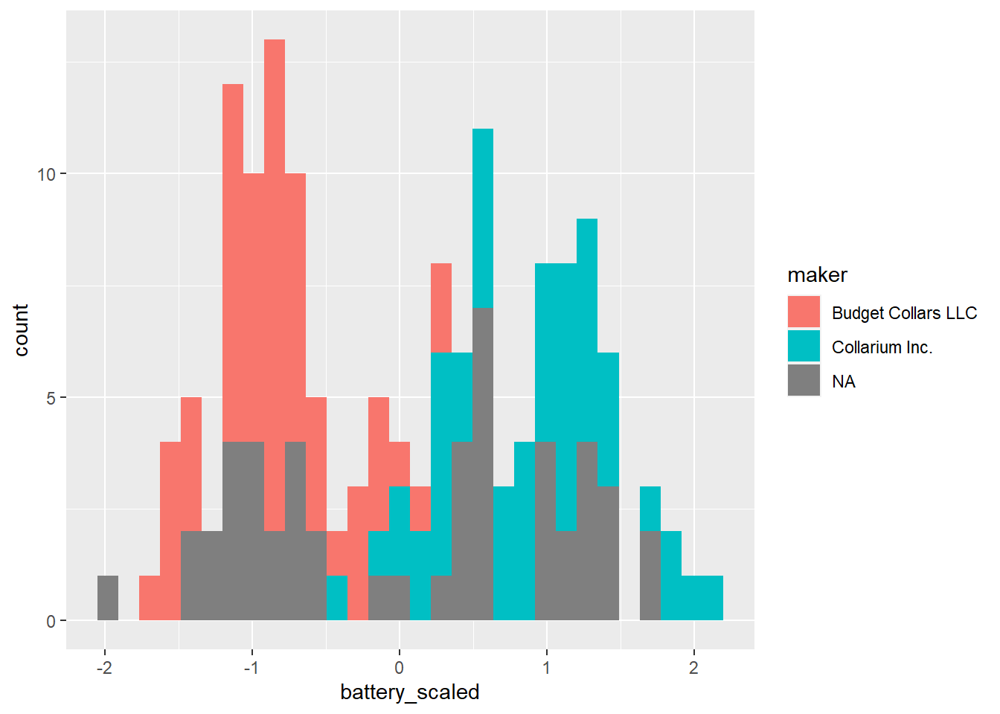

# Load library
library(tidyverse)
# Load data
full_collars <- read_csv("data/all_collar_data.csv")3.5: K-Nearest Neighbor
Machine Learning
Now, we’re going to work through an example of machine learning, which is used in a variety of ways in data science, across industries and disciplines.
Machine learning is a sub-field of artificial intelligence (AI). Machine learning uses a data-driven approach; a model is typically trained on data with known outcomes, then the model uses that previous knowledge to predict the outcomes of new data.
Remember, we have 50 unlabeled collars, and we want to be able to predict who made them so we can increase the safety of our fishers. We need to throw out any collars that we think were made by Budget Collars LLC, and only incorporate new collars from our unlabeled batch that we think were made by Collarium Inc.
Given the data we have from the collars we know were created by Budget Collars LLC and Collarium Inc, our goal is to train a model on collars with known makers to then apply to our unknown collars.
KNN in R
K-nearest neighbors (KNN) is a classification algorithm (e.g., it attempts to predict labels or “classes”). It uses the classes of the nearest neighbors to a new data point (the number of neighbors = k) to predict the class of the new data point.

You don’t need to know the inner-workings of the model or even the code below; all you need to know is the overall concept of how K-nearest neighbors works and what the results mean.
How does KNN work?
Let’s start with watch a video that does a nice job explaining the basics of KNN.
What are your takeaways?
Visualizing
Creating plots that visualize KNN is pretty complicated, so we won’t be doing that as a class. However, you can find a nice interactive data visualization here.
Play around with the data visualization. Can you figure out what it is telling you?
Classifying Collars
Now that we have an idea of how KNN works, let’s get started with our dataset.
Here’s our overall trajectory:
Load our collars data.
Split the data into collars where we know the maker and collars where we don’t.
Split the collars with known makers into 2 data frames: one for training our model and one for testing the model out on data where we already know the answers.
Apply the best model to our collars with unknown makers to get predictions for which maker made the collar.
First, we need our data!
Data Cleaning and Prepping
Next, we need to scale our data.
What does this mean? It means we are transforms the data so that they are all in the same scale. Because KNN uses distances between points to determine neighbors, we need to have our data measured on the same scale.
Before scaling, battery life (~100) and signal distance (~4000) were working in very different ranges, with signal distance being much bigger. Once we scale them, they will both have means around 0 and similar standard deviations.
# Standardize and remove unnecessary data
# Start with the full data set
knn_data <- full_collars %>%
# Mutate the battery and signal columns to be scaled
mutate(battery_scaled = scale(battery_life),
signal_scaled = scale(signal_distance)) %>%
# Remove columns we aren't using anymore
dplyr::select(-battery_life, -signal_distance, -fail:-weight) %>%
# Make the maker column a factor (categorical)
mutate(maker = as.factor(maker))Let’s summarize and plot the scaled data to see what it looks like. Let’s focus on battery life.
# Mean and standard deviation of battery life
knn_data %>%
summarise(mean_bat = mean(battery_scaled),
sd_bat = sd(battery_scaled))# A tibble: 1 × 2
mean_bat sd_bat
<dbl> <dbl>
1 -1.31e-16 1# Histogram
ggplot(knn_data, aes(battery_scaled, fill = maker)) +
geom_histogram()`stat_bin()` using `bins = 30`. Pick better value with `binwidth`.
Right now, we have 3 collar categories because we haven’t separated the unknown collars. Let’s do that.
Known and Unknown Labels
Before we continue, we need to make separate data frames to work with, one with collars with known makers and one with collars with unknown labels
# Filter collars with unknown maker
collars_to_label <- knn_data %>%
filter(is.na(maker))
# We need to save the collar ids before removing them
unknown_collar_ids <- collars_to_label %>%
dplyr::select(collar_id)
# Remove maker and collar_id columns
collars_to_label <- collars_to_label %>%
dplyr::select(-maker, -collar_id)
# Back to original dataset: filter collars with a known maker, and remove collar_id
labeled_collars <- knn_data %>%
filter(!is.na(maker)) %>%
select(-collar_id)Training and Testing Data
First, we need to train and test our model. We will do that with the data with known collars makers.
Note: This is where the code starts getting a bit complicated. It’s ok if you aren’t entirely clear on what everything is doing.
# Randomly choose 30 out of the 100 collars to be our test data
# We will train the model with the other 70 collars, then test how well that model does using the 30 collars we held back
# Because we KNOW the actual makers of those 30 collars, we will know if our model made any mistakes
# Since we are randomly choosing values, we will use set.seed() to make sure everyone in class is getting the same random values
set.seed(411)
# Randomly select 30 row positions (70%) to pull out
rows_to_pull <- sample(1:100, 30)
# View random selections
rows_to_pull [1] 12 8 79 54 31 80 49 22 35 72 73 43 50 57 38 18 60 99 67
[20] 7 23 32 9 16 15 2 82 71 100 45# Remove test data from labeled collars
training <- labeled_collars[-rows_to_pull, ]
# Pull out the 30 rows for testing
testing <- labeled_collars[rows_to_pull, ] Training and Testing KNN
Now that we have training and testing data, we can perform the first phase of KNN.
We want to know how many nearest neighbors we should use and how well our model works on the testing data. We will use the caret package to run these analyses.
# Loading package to do KNN
library(caret)Warning: package 'caret' was built under R version 4.2.3Loading required package: lattice
Attaching package: 'caret'The following object is masked from 'package:purrr':
lift# Set seed again
set.seed(411)
# Training the model and finding the best k value
knn_training_model <- train(maker ~ ., data = training, method = "knn")
# View results and find that the best k value is 5
knn_training_modelk-Nearest Neighbors
70 samples
2 predictor
2 classes: 'Budget Collars LLC', 'Collarium Inc.'
No pre-processing
Resampling: Bootstrapped (25 reps)
Summary of sample sizes: 70, 70, 70, 70, 70, 70, ...
Resampling results across tuning parameters:
k Accuracy Kappa
5 0.9782931 0.9552329
7 0.9771543 0.9525164
9 0.9790591 0.9566543
Accuracy was used to select the optimal model using the largest value.
The final value used for the model was k = 9.Ok, we have determined that our best k value is 5. Now we can use our training model on the testing data to see if it makes any mistakes. We use the predict function from caret to do this.
# Making predictions with the test data
knn_predict_test <- predict(knn_training_model, testing)
# This will show us that there are no mistakes!
confusionMatrix(knn_predict_test, testing$maker) Confusion Matrix and Statistics
Reference
Prediction Budget Collars LLC Collarium Inc.
Budget Collars LLC 14 0
Collarium Inc. 0 16
Accuracy : 1
95% CI : (0.8843, 1)
No Information Rate : 0.5333
P-Value [Acc > NIR] : 6.456e-09
Kappa : 1
Mcnemar's Test P-Value : NA
Sensitivity : 1.0000
Specificity : 1.0000
Pos Pred Value : 1.0000
Neg Pred Value : 1.0000
Prevalence : 0.4667
Detection Rate : 0.4667
Detection Prevalence : 0.4667
Balanced Accuracy : 1.0000
'Positive' Class : Budget Collars LLC
Great, our model didn’t make any mistakes! It is probably ready to apply to our collars of unknown origin.
Predicting the Unknown Collar Makers
We will apply the same model but now to the new data.
# Making predictions for the collars without makers
knn_predict <- predict(knn_training_model, collars_to_label)
# View results
knn_predict [1] Budget Collars LLC Budget Collars LLC Budget Collars LLC Budget Collars LLC
[5] Collarium Inc. Collarium Inc. Collarium Inc. Collarium Inc.
[9] Collarium Inc. Collarium Inc. Budget Collars LLC Budget Collars LLC
[13] Collarium Inc. Budget Collars LLC Budget Collars LLC Collarium Inc.
[17] Budget Collars LLC Budget Collars LLC Collarium Inc. Collarium Inc.
[21] Collarium Inc. Collarium Inc. Budget Collars LLC Budget Collars LLC
[25] Collarium Inc. Collarium Inc. Budget Collars LLC Collarium Inc.
[29] Budget Collars LLC Budget Collars LLC Collarium Inc. Collarium Inc.
[33] Budget Collars LLC Budget Collars LLC Budget Collars LLC Collarium Inc.
[37] Collarium Inc. Collarium Inc. Collarium Inc. Collarium Inc.
[41] Budget Collars LLC Collarium Inc. Budget Collars LLC Budget Collars LLC
[45] Budget Collars LLC Collarium Inc. Budget Collars LLC Collarium Inc.
[49] Collarium Inc. Budget Collars LLC
Levels: Budget Collars LLC Collarium Inc.# As a table
table(knn_predict)knn_predict
Budget Collars LLC Collarium Inc.
24 26 We have predictions! Our last step is to recombine our data so that the collars now have their new labels.
# Let's bind the columns together
new_labels <- bind_cols(unknown_collar_ids, knn_predict)New names:
• `` -> `...2`# View collars now with known makers!
new_labels# A tibble: 50 × 2
collar_id ...2
<dbl> <fct>
1 129 Budget Collars LLC
2 138 Budget Collars LLC
3 134 Budget Collars LLC
4 140 Budget Collars LLC
5 104 Collarium Inc.
6 118 Collarium Inc.
7 105 Collarium Inc.
8 127 Collarium Inc.
9 111 Collarium Inc.
10 125 Collarium Inc.
# ℹ 40 more rowsTypically, you would want to replace the columns in the entire dataframe, but we will end here for today :) Our goal of labeling our unlabeled collars is complete! We will deploy any that are now labeled as Collarium LLC.